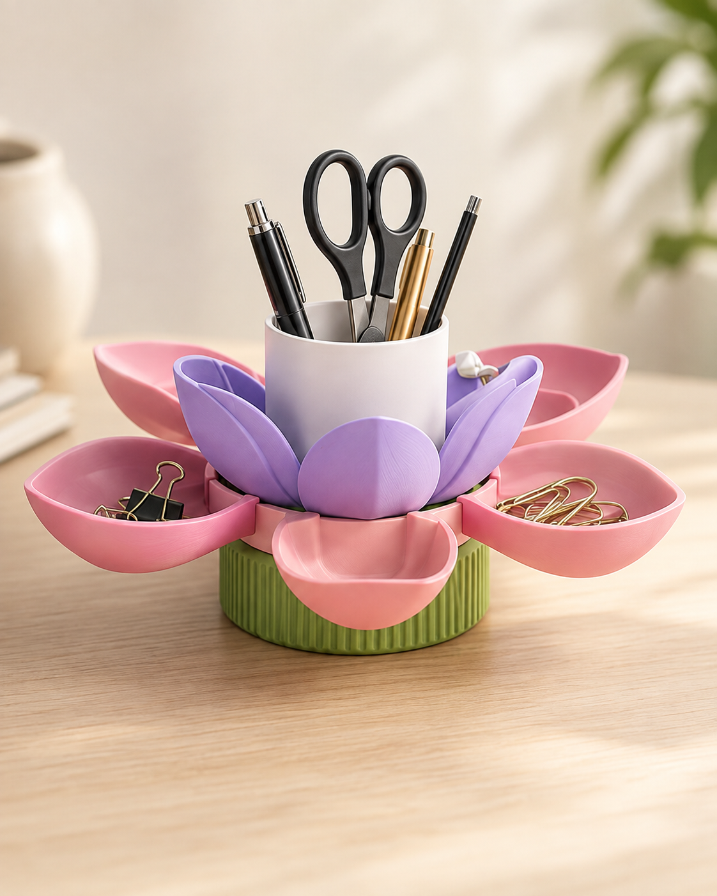
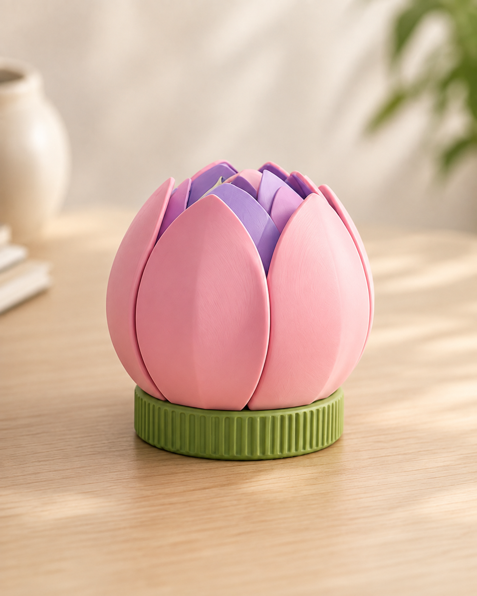
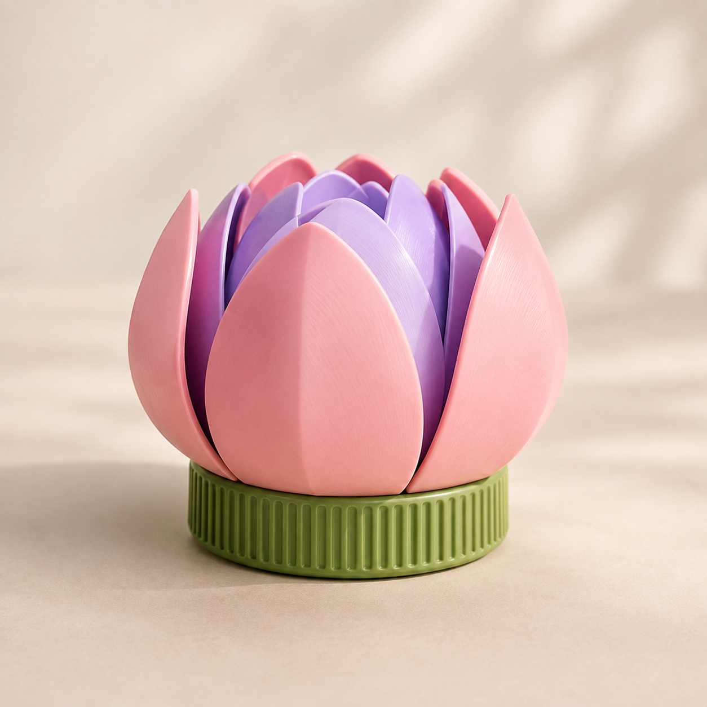
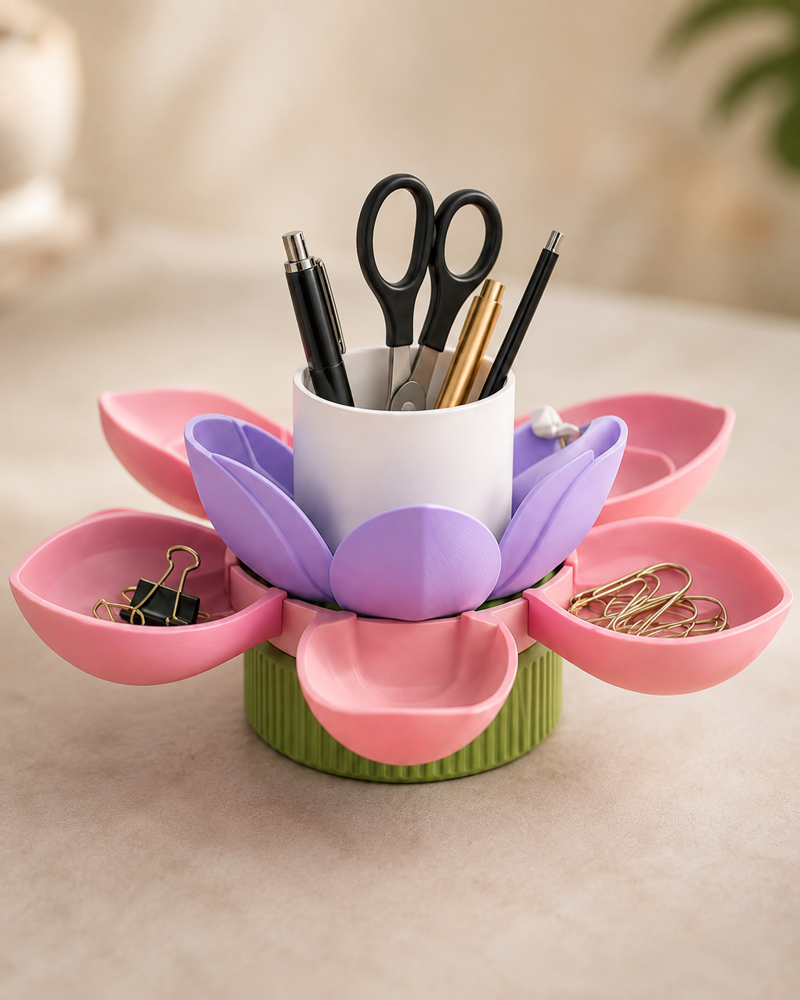
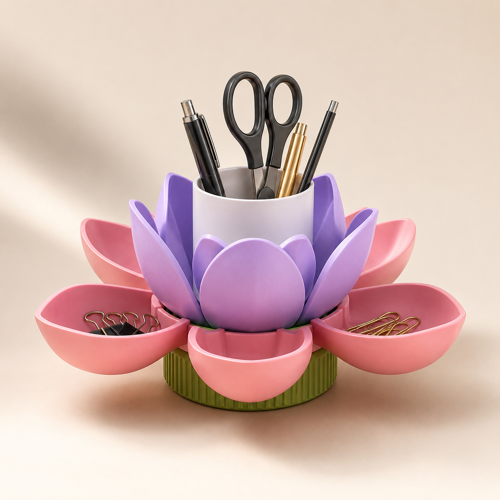
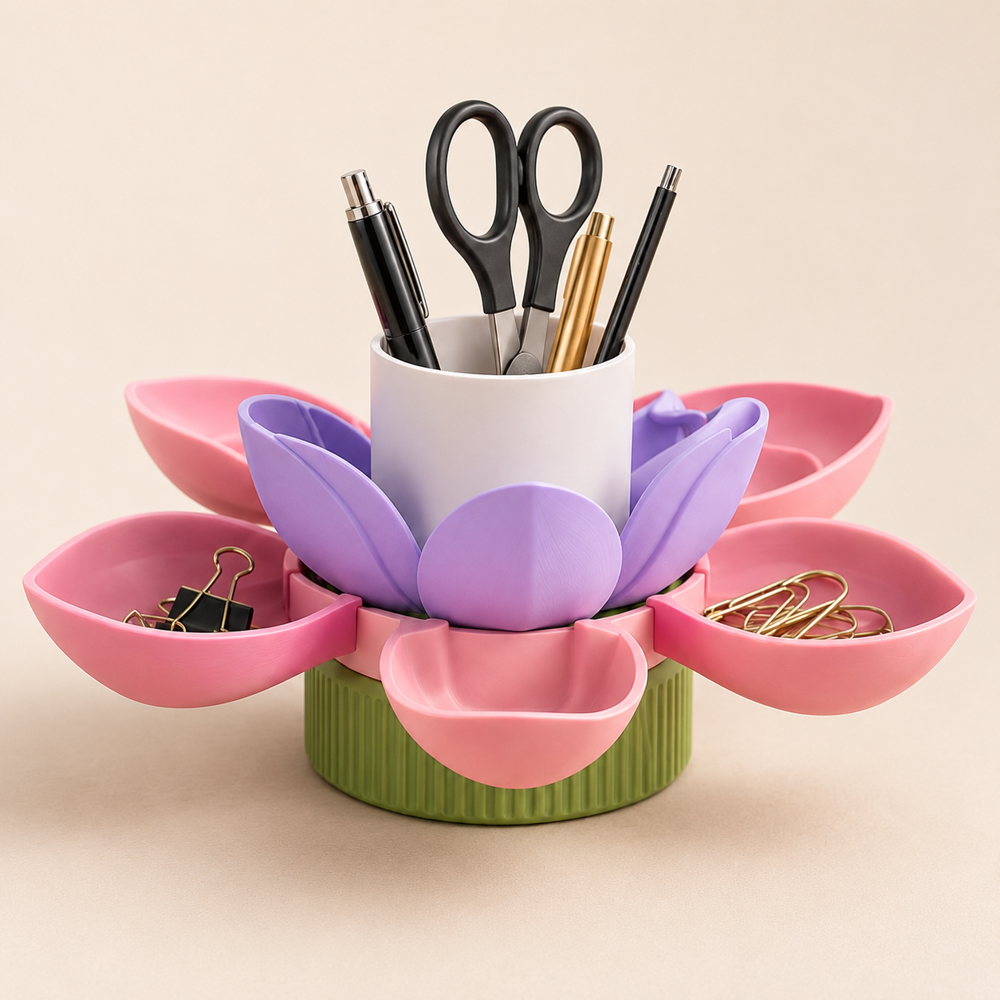

Twist-to-Bloom
Rotate the base to open and close.
BloomPod is a flower-inspired desk organiser that changes from a compact decorative bud into practical stationery storage through one simple motion.


Rotate the base to open and close.
Organise pens, clips and small tools.
Separate parts for testing and assembly.
Practical storage with a softer form.
When closed, BloomPod appears as a calm flower bud. Rotate its lower ring and the petals move outward, revealing individual storage trays around a central holder for taller stationery.
Discover the mechanism →

Outer petals create accessible trays, while the centre holder keeps pens and scissors upright.
Four connected stages turn BloomPod from a compact object into an open, accessible organiser.
Rotate the textured bottom ring gently.
The base transfers movement into the internal cam.

The petal arms follow a controlled opening path.

The organiser is ready for everyday essentials.
Each part supports the movement, usability and ability to manufacture BloomPod as a real object.
A textured ring provides a clear and comfortable twist interaction.
Multiple trays separate clips, notes and smaller desk essentials.
A taller centre keeps pens, scissors and tools upright.
Components can be printed, tested and refined independently.
BloomPod is developed through concept exploration, digital modelling, physical testing and refinement.
Exploring how a floral form could become useful desk storage.
Building petals, linkage arms, the centre holder and rotating base.
Checking clearances, support placement and moving-part tolerances.
Assembling and refining the mechanism for a reliable transformation.
BloomPod is an assembly of purpose-built parts that work together to create its opening movement.
Starts the user-controlled movement.
Converts rotation into coordinated motion.
Guide each petal along its opening path.
Form the main storage compartments.
Create the layered flower appearance.
Stores taller stationery and tools.
Each image below is a separate generated product render created specifically for the website.
BloomPod was designed and developed by Groben Tham, a Year 3 Immersive Media student at Ngee Ann Polytechnic.
This front-end preview can later be replaced with a final animation or recorded physical prototype.